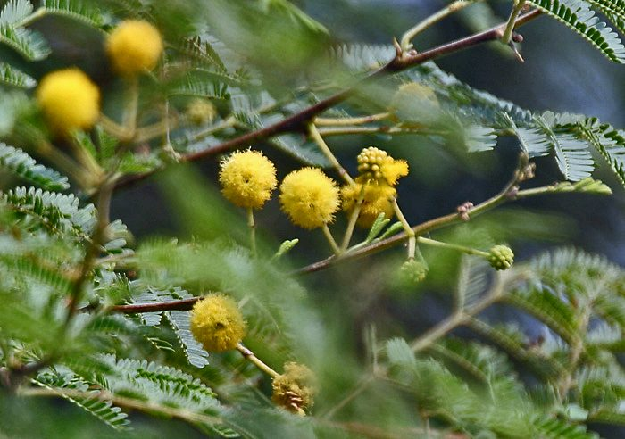

बबूलBabool
Acacia nilotica · Fabaceae · FLR-0047

- Scientific name
- Acacia nilotica (L.) Willd. ex Delile
- Family
- Fabaceae
- Hindi
- बबूल
- Status here
- native
- IUCN
- LC
When to look कब देखें
Present all year.
बबूल / Babool
Vachellia nilotica (L.) Willd. ex Delile — Fabaceae
बबूल (कीकर) — उत्तर प्रदेश के मैदानी इलाकों में पाए जाने वाला एक अत्यंत महत्वपूर्ण, कांटेदार और सूखा-सहिष्णु (drought-tolerant) देशी पेड़ है। यह पेड़ 5 से 15 मीटर की ऊंचाई तक बढ़ता है, जिसका तना काला-भूरा और खुरदरा होता है। इसकी शाखाओं पर पत्तों के आधार से लंबे, सीधे, सफेद रंग के तीखे कांटे निकलते हैं जो इसे शाकाहारी जीवों से बचाते हैं। सर्दियों की शुरुआत में (नवंबर-जनवरी) इसमें चमकीले पीले रंग के छोटे, गोल और सुगंधित फूलों के गुच्छे आते हैं। इसके बाद इसमें मोतियों की माला जैसे दिखने वाले (constricted) लंबे धूसर-सफेद रंग के फल (pods) लगते हैं। बबूल की गहरी जड़ें मिट्टी को बांधती हैं और इसमें मौजूद गांठे (nodules) नाइट्रोजन को मिट्टी में स्थिर करके उसकी उर्वरता बढ़ाती हैं। यह पेड़ बया पक्षी के घोंसलों और कई मकड़ियों के जालों के लिए एक सुरक्षित प्राकृतिक आश्रय प्रदान करता है।
Quick Identification त्वरित पहचान
| Feature | Description |
|---|---|
| Form | Small to medium-sized tree (5–15 m) with a dense, spreading, hemispherical or umbrella-shaped canopy |
| Spines | Paired, straight, sharp stipular thorns (1–5 cm long) at leaf bases, pointing slightly backward; bright white on mature twigs |
| Leaves | Alternately arranged, bipinnately compound, feathery (4–10 cm long); with 2–8 pairs of pinnae, each carrying 10–25 pairs of tiny oblong leaflets |
| Flowers | Bright yellow, sweet-scented, spherical flower heads (1–1.5 cm diameter) clustered in leaf axils on slender stalks |
| Fruit | Elongated, flat, thick grey-green pod (7–15 cm long) strongly constricted between the seeds, giving a bead-like appearance; turns greyish-brown when dry |
| Bark | Dark brown to blackish, rough, deeply cracked with vertical fissures; yields red-brown gum when injured |
Field tip: Any medium-sized tree in dry scrub or field edges carrying long, straight white thorns, bright yellow ball-like flowers in winter, and grey pods constricted like beads is a Babool tree.
Morphology आकारिकी
Biometrics (typical measurements for adult specimens in dry alluvial plains of Basti):
| Feature | Measurement |
|---|---|
| Tree height | 5–15 m |
| Leaf length | 4–10 cm |
| Leaflet length | 3–6 mm |
| Spine length | 1–5 cm (sometimes absent on older branches) |
| Flower head diameter | 10–15 mm |
| Pod length | 7–15 cm |
| Pod width | 1–1.5 cm |
Leaves: The feathery leaves are double-compound (bipinnate). The petiole carries a small gland just below the first pair of pinnae and another gland between the top pinnae. Leaflets are close-set, linear-oblong, and smooth.
Thorns: The thorns are modified stipules. On young branches, they are long, sharp, and silvery-white, sometimes reaching 8 cm on young saplings, while mature trees may have shorter thorns on higher branches.
Associated Species / Interactions सहजीवी संबंध
Keystone scrubland anchor.
- Nesting host: Babool is the primary nesting tree for the Baya Weaver (
[BRD-0018 Baya Weaver]). The birds weave their elaborate hanging nests from the tips of thorny branches overhanging water or fields, utilizing the thorns as a natural barrier against snakes and mammalian nest predators. - Web support: The rigid, thorny twigs provide a stable 3D matrix for web-building spiders, particularly the Tropical Tent-web Spider (
[SPD-0009 Tropical Tent-web Spider]), which constructs dense colonies in its canopy. - Forage value: The nutrient-rich pods and leaves are a major winter forage for goats, sheep, and wild herbivores like Nilgai (
[MAM-0011 Nilgai]), which consume the fallen pods and disperse the hard seeds in their dung. - Nitrogen fixation: The root system hosts symbiotic Rhizobium bacteria, converting atmospheric nitrogen into soil nutrients, which benefits surrounding herbaceous vegetation.
Life Cycle / Phenology जीवन चक्र
- New foliage: Flushes of soft green leaves emerge in early summer (April–May) after a brief leaf drop during late winter.
- Flowering: Spherical yellow flowers bloom heavily after the monsoon rains, peaking between November and January.
- Fruiting: Grey-green pods develop through winter, maturing and drying into woody grey-brown structures by February–March.
- Seed release: The pods fall to the ground in spring, where they are consumed by animals or decay naturally during monsoon to release the hard, water-resistant seeds.
Pests and Diseases कीट और रोग
- Acacia Bagworm: Larvae of psychid moths build silk-and-leaf bags on twigs and defoliate young trees.
- Heart Rot: Fungal pathogens (Fomes spp.) enter through bark wounds in older trees, decaying the inner red-brown heartwood.
- Seed Beetles: Bruchid beetles (Bruchidius spp.) infest the green pods, boring holes into the seeds and reducing germination rates.
Agricultural / Human Relevance कृषि प्रासंगिकता
Agroforestry, soil conservation, and timber.
- Windbreak and bund planting: Farmers plant Babool along agricultural boundaries to act as a living fence (due to thorns) and a windbreak to prevent soil erosion.
- Heavy wood: The red-brown heartwood is extremely hard, heavy, and durable. It is traditionally used to manufacture cartwheels, ploughs, tool handles, and railway sleepers.
- Tanning and gum: The bark contains high tannin concentrations used in rural leather cottage industries. The bark yields a edible gum (gum arabic) collected by locals for traditional sweet preparations.
Traditional and Ethnobotanical Use
- Toothbrush twigs (Datun): Fresh slender twigs are chewed daily as a natural toothbrush (Babool ka Datun) in villages, releasing anti-bacterial tannins that strengthen gums and cure toothaches.
- Diarrhea remedy: A decoction of the tender leaves or bark is used in traditional medicine to treat chronic diarrhea and dysentery.
- Wound wash: The boiled bark water acts as an antiseptic wash to clean old wounds and skin ulcers.
- Gum tonic: The natural gum collected from the trunk is fried in ghee and mixed with nuts to make Gond ke Laddu, a highly nourishing traditional tonic given to lactating mothers and elderly villagers to strengthen joints.
Expected Locally स्थानीय रूप से अपेक्षित
Not a field record. Written from published accounts for eastern Uttar Pradesh. No confirmed local sighting yet — if you have seen it, that is what the atlas needs.
अभी तक स्थानीय पुष्टि नहीं। यह विवरण प्रकाशित स्रोतों से है, किसी अवलोकन से नहीं।
Commonly found in sandy soils, pastures, and along canal banks throughout Basti district. Sighted frequently in salt-affected (usar) wastelands in Saltaua and Bahadurpur blocks. The tree's capacity to thrive in degraded, waterlogged soils makes it a pioneer species in village common lands.
Distribution वितरण
Global range: Native to Africa, the Middle East, and the Indian subcontinent (India, Pakistan, Nepal, Bangladesh).
In India: Abundant throughout the drier plains, particularly in Rajasthan, Gujarat, Haryana, Madhya Pradesh, and Uttar Pradesh.
In Uttar Pradesh: Present in all plain districts, especially common in dry, semi-arid scrublands and ravines.
In Basti district / eastern UP: Common native resident tree in all blocks.
Research Questions शोध प्रश्न
- How does the nesting success of Ploceus philippinus (Baya Weaver) on Babool trees compare to nesting on palm trees in Basti? / बबूल के पेड़ों पर बया पक्षी के घोंसलों की सफलता दर ताड़ के पेड़ों की तुलना में कैसी होती है?
- What is the effect of animal digestion (goats vs. nilgai) on the germination rate of Acacia nilotica seeds? / पशुओं (बकरी बनाम नीलगाय) द्वारा खाए गए बबूल के बीजों के अंकुरण दर पर क्या प्रभाव पड़ता है?
- Does the tannin content in Babool bark vary significantly between trees growing in saline usar land and alluvial riverbanks?
- Is there a correlation between the density of Cyrtophora citricola spider webs and the leaf-to-spine ratio of Babool branches?
- Can children chew a Babool twig and record how long it takes to soften into a brush-like fiber? — A traditional dental hygiene science experiment.
Similar Species मिलती-जुलती प्रजातियाँ
| Species | Key Difference | हिंदी |
|---|---|---|
Leucaena leucocephala (Subabul [FLR-0045]) | Lacks thorns entirely; has white puff-puff flowers; pods are thin, flat, and not constricted; highly invasive. | सुबबूल — कांटे रहित, चपटी फलियाँ |
Acacia auriculiformis (Earleaf Acacia [FLR-0049]) | Lacks thorns; leaves are modified into sickle-shaped phyllodes; flowers are yellow spikes (not balls); pods are twisted; invasive. | बंगाली बबूल — हँसिए जैसे पत्ते, कांटे रहित |
Prosopis juliflora (Vilayati Kikar [FLR-0039]) | Spines are short, stout, and green-brown; flowers are pale yellow cylindrical spikes (not balls); pods are straw-yellow and straight. | विलायती कीकर — झाड़ीनुमा, पीले फूल की बालियाँ |
Taxonomy & Classification वर्गीकरण
Original description. Carl Linnaeus described the species as Mimosa nilotica in 1753 in Species Plantarum (Vol. 2, p. 1506), with the type locality in Egypt. Carl Ludwig Willdenow transferred it to the genus Acacia as Acacia nilotica in 1806. Alire Delile published the combination Acacia nilotica (L.) Willd. ex Delile in 1813 in Description de l'Égypte (Vol. 2, p. 79). The specific epithet nilotica refers to the River Nile, where the species was collected.
Subspecies. Monotypic in eastern UP, though several subspecies are described globally (e.g., Acacia nilotica subsp. indica is the common Indian variety).
Family and order placement. Placed in the order Fabales, family Fabaceae (legume family), subfamily Caesalpinioideae (formerly Mimosaceae), tribe Acacieae.
Phylogenetic notes. Following the formal splitting of the polyphyletic genus Acacia sensu lato, the African and Asian species (including Babool) were moved to the genus Vachellia Wight & Arnott, making the accepted botanical name Vachellia nilotica (L.) Willd. ex Delile. We retain Acacia nilotica in the database registry as it remains the most widely referenced name in Indian forest management.
IUCN status rationale. Listed as Least Concern (LC) by the IUCN Red List. It is an extremely widespread, ecologically robust, and abundant native species facing no threats of population decline.
Photo Gallery फोटो गैलरी
References संदर्भ
- Linnaeus, C. (1753). Species Plantarum. Laurentii Salvii, Holmiae, Vol. 2, p. 1506. [original description]
- Delile, A. (1813). Description de l'Égypte. Imprimerie Impériale, Paris, Vol. 2, p. 79.
- Brandis, D. (1906). Indian Trees. Archibald Constable & Co., London.
- Hooker, J. D. (1878). The Flora of British India. Vol. 2. L. Reeve & Co., London.
- Botanical Survey of India. State Flora Series: Flora of Uttar Pradesh. BSI, Kolkata.
- IUCN SSC Global Tree Specialist Group (2019). Vachellia nilotica. The IUCN Red List of Threatened Species. IUCN, Gland, Switzerland.
- GBIF Occurrence Data — Acacia nilotica, South Asia (2026). GBIF taxon key: 2978421.
- BirdLife International (2024). Ploceus philippinus ecological interactions database.
Source file: species/flora/trees/babool.md